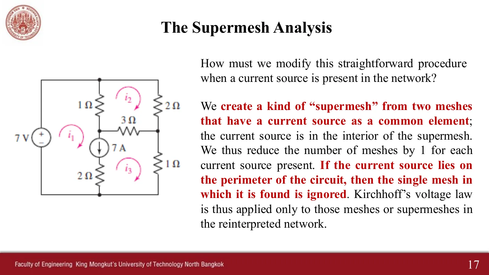
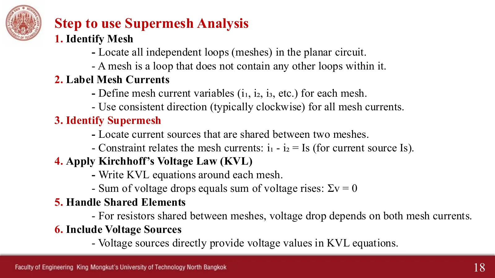
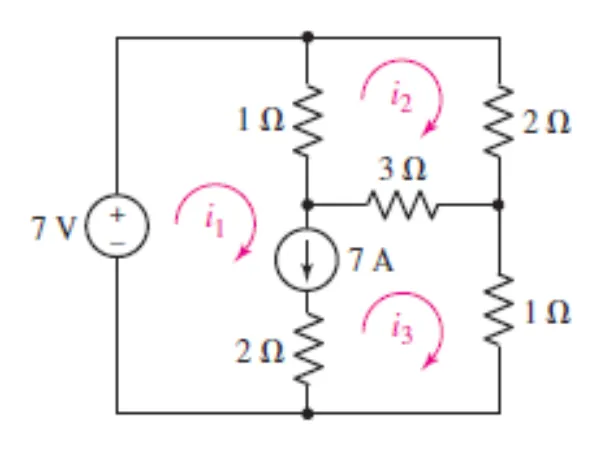
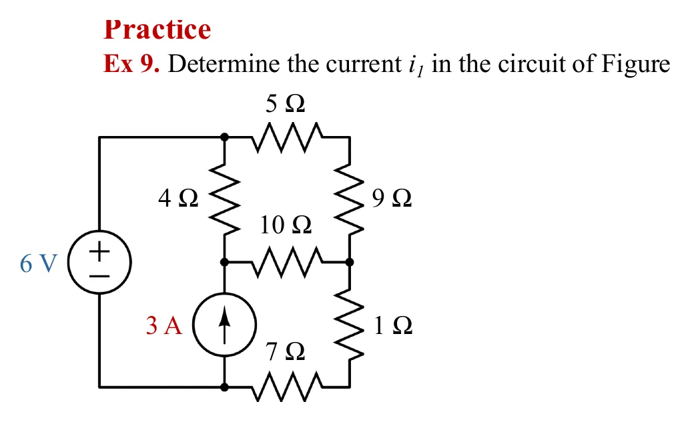
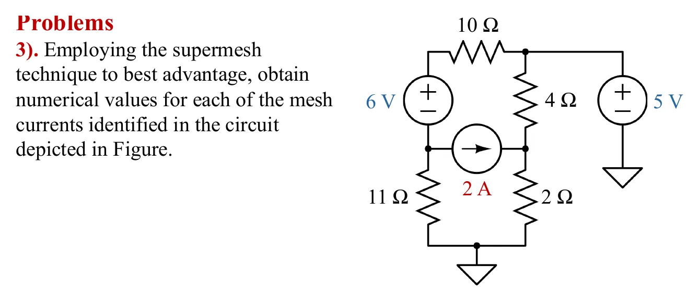
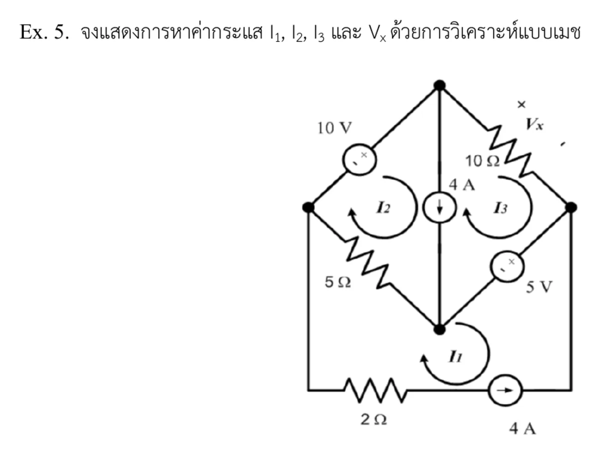
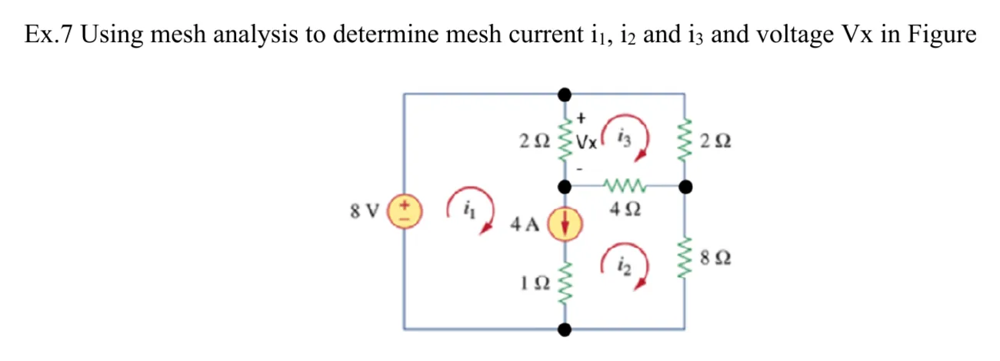
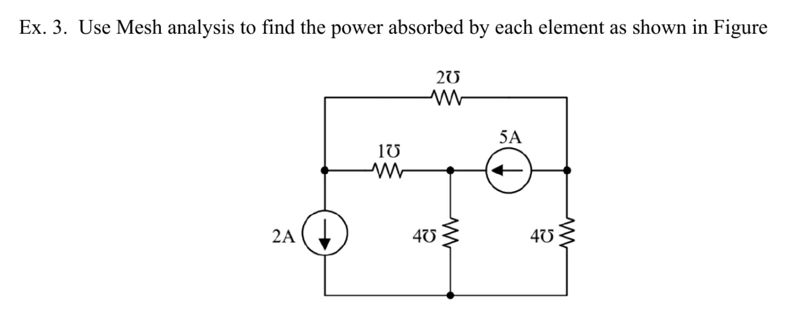

สไลด์หน้า 17: แหล่งจ่ายกระแสไม่บอกแรงดันของตัวเอง จึงเขียน KVL ผ่านมันไม่ได้ ถ้าแหล่งจ่ายกระแสเป็นกิ่งที่สองเมชใช้ร่วมกัน ให้รวมสองเมชเป็นซูเปอร์เมช (supermesh) แล้วเขียน KVL รอบขอบนอกของทั้งสองเมชโดยไม่ผ่านกิ่งของแหล่งจ่ายกระแส และเพิ่มสมการเงื่อนไข \(i_a - i_b = I_s\) ส่วนแหล่งจ่ายกระแสบนขอบนอกบอกกระแสเมชนั้นทันที ในภาพจำลอง แหล่งจ่ายกระแสที่ใช้ร่วมถูกขีดฆ่าสีแดง และเส้นประสีเหลืองเดินรอบขอบนอกของซูเปอร์เมช หน้านี้มี 6 โจทย์ เรียงทีละข้อ (ตัวอย่างในหน้า 17, Ex 9, การบ้านข้อ 3 และแบบฝึกหัด Ex.5, Ex.7, Ex.3) ตามด้วยตารางเทียบจำนวนสมการของวิธีโนดกับวิธีเมชของทุกวงจรในบทนี้
Slide p. 17: a current source does not tell its own voltage, so KVL cannot be written through it. When a current source is a branch shared by two meshes, join the two into a supermesh, write KVL round the outer edge of both without going through the current-source branch, and add the constraint \(i_a - i_b = I_s\). A current source on the outer edge still gives its mesh current at once. In the simulations the shared current source is struck in red and a yellow dashed path walks the outer edge of the supermesh. This page has 6 problems, one after another (the example on p. 17, Ex 9, homework 3 and exercises Ex.5, Ex.7, Ex.3), then a table comparing the number of equations of nodal and mesh analysis for every circuit of the chapter.
ขั้นตอนเหมือนวิธีเมชในหน้า 4.3 เพิ่มขั้นที่ 3: หาแหล่งจ่ายกระแสที่สองเมชใช้ร่วมกัน แล้วเขียนสมการเงื่อนไขของแต่ละตัว ในห้องผู้สอนสรุปไว้ที่หน้าสารบัญว่า ใช้ซูเปอร์เมชเมื่อวงจรมีแหล่งจ่ายกระแสอิสระอยู่ระหว่างสองเมช
The steps are those of mesh analysis on page 4.3 with one more, step 3: find every current source shared by two meshes and write its constraint. In class the teacher noted on the contents slide: use a supermesh when the circuit has an independent current source between two meshes.







นับก่อนเลือก: วิธีโนดต้องแก้ \((N - 1) - N_V\) สมการพร้อมกัน (แหล่งจ่ายแรงดันแต่ละตัวลดหนึ่งสมการ) วิธีเมชต้องแก้ \(M - N_I\) สมการ (แหล่งจ่ายกระแสแต่ละตัวลดหนึ่งสมการ) โดย \(M = B - N + 1\) ตารางนี้แก้ทุกวงจรของบทนี้ทั้งสองวิธี แล้วตรวจว่ากระแสในตัวต้านทานทุกตัวออกมาเท่ากันพอดีไม่ว่าจะใช้วิธีไหน
Count before you choose: nodal analysis needs \((N - 1) - N_V\) simultaneous equations (each voltage source removes one), mesh analysis needs \(M - N_I\) (each current source removes one), with \(M = B - N + 1\). This table solves every circuit of the chapter both ways and checks that the current in every resistor comes out exactly equal, whichever method is used.